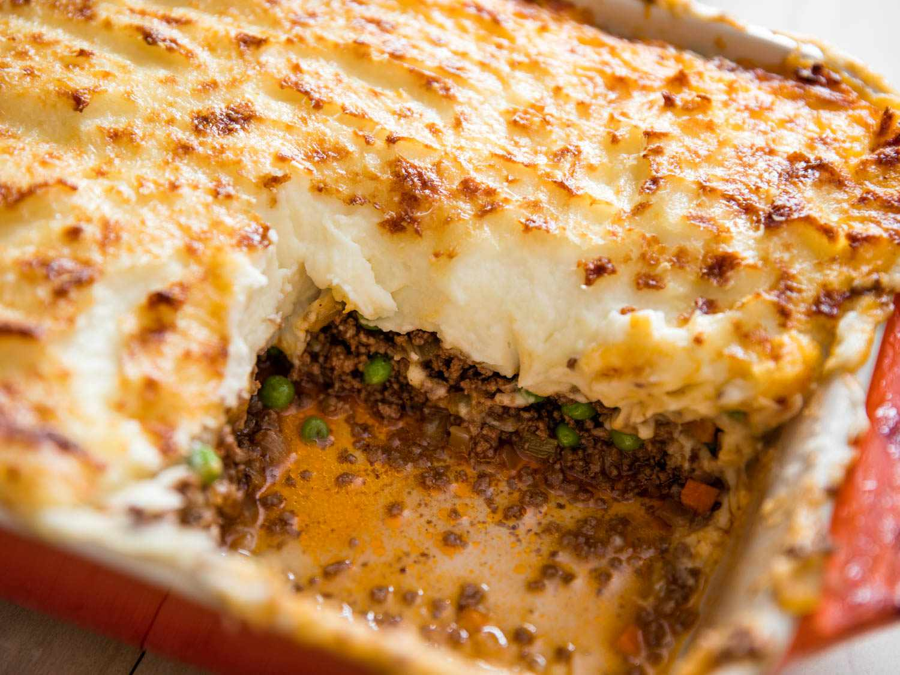

Dad's Shepherd's Pie

About this recipe:
A midwest classic!
With a hodgepodge mix of ingredients, this unique yet savory classic is a Spaulding staple!
Ingredients:
- 1 lb ground beef or burger meat
- 4-6 servings instant mashed potatoes
- 1-2 cans drained veggies of choice (corn, beets, carrots, peas, beans, etc)
- 1 can mushroom soup
Steps:
- Brown and season 1 lb of burger
- Put into bottom of casserole dish
- Add 1 can mushroom soup poured over burger in dish
- Layer 1-2 cans of drained veggies
- Make 4-6 servings of instant mashed potatoes
- Layer potatoes on top of veggies
- Bake at 350º F. for 30 minutes
- Serve